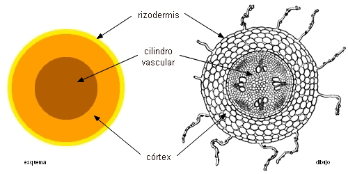

Raíz: laboratorio
Cuerpo primario de la planta


Estructura primaria
- Rizodermis (epidermis)
- Pelos radicales
- Córtex
- Exodermis
- Parénquima
- Endodermis
- Estela (cilindro vascular)
- Periciclo
- Floema
- Xilema
- Medula


Raices secundarias o laterales
- Se originan en el periciclo, opuesto a los polos del protoxilema
- Ocurre detrás de la zona de elongación, en tejidos parcialmente o totalmente diferenciados
- Origen endógeno (desde el interior de la raíz principal)
- Primordio radicular aumenta de tamaño y atraviesa la corteza
- Desarrolla caliptra, meristemo apical y meristemos primarios en etapas tempranas
- La conexión vascular entre raíz lateral y raíz principal se establece posteriormente, por diferenciación del periciclo y parénquima vascular

Estructura secundaria
- Presente en Gymnospermae y Angiospermae
- Consiste en la formación tejidos vasculares secundarios (xilema y floema) y peridermis (súber, felógeno y felodermis)
- Inicia en raíces que ya no se alargan con la formación del cámbium vascular (originado en el procámbium y periciclo)
- Perdida de córtex, endodermis y floema primario
- Formación de radios medulares, peridermis y lencitelas
- Algunas raíces pueden presentar crecimiento secundario atípico

Monocotyledoneae vs Eudicotyledoneae

Fig 12: Comparación entre raíz en crecimiento primario de Eudicotyledoneae y Monocotyledoneae. Nabors (2006).
Tipos de raíces
Las raíces se pueden clasificar por su origen (primaria, secundaria, adventicia), morfología (axonomorfa, fasciculada, modificada), hábitat (aéreas, acuáticas, subterráneas), función (almacenamiento, haustoriales, neumatoforos.), duración (anuales, bienales o perennes).

Fig 14: Tipos de raíz. A. Axonomorfa. B. Fibrosa. C. Fúlcreas. D. Haustoriales. E. De reserva. F. Tabulares. G, H. Neumatoforos. Evert & Eichhorn (2013).
Raíz de Monocotyledoneae
- Cortes transversales con Safranina y Azul Alcián de raíces de Zea mays, Monstera deliciosa y Orchidaceae. Observe e identifique: epidermis, exodermis (si existe), córtex, velamen (si existe), endodermis, floema, xilema, médula.

Fig 16: Corte transversal de una raíz de Monocotyledoneae. Megías-Pacheco et al. (2017).

{kind=link}